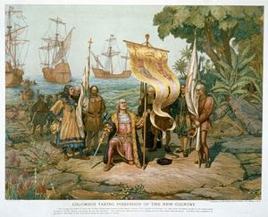

By the end of this lesson, you should be able to: :* State and apply the three axioms of probability.
 On August 3, 1492, Columbus set sail from Spain for his intended destination: the Indies (Caso, Adolph 1990). He was on the Santa Maria, which had a crew of approximately 41 men (“Crist’obal col’on” 1991; “Christopher Columbus”). Several other men were aboard the Niña and the Pinta (“Crist’obal col’on” 1991). On October 12, he landed on an island in the Bahamas he called San Salvador.
The return trip was not without challenges. The Santa Maria ran aground on Christmas Day, 1492, and was abandoned on the island we now call Haiti. Following this incident, Columbus sailed for Spain. Severe storms made the journey difficult. A particularly bad storm on February 14, 1493 made the crew fear for their lives. By morning, the storm was even worse!
Recognizing his dependence upon God, Columbus ordered that a pilgrimage should be made to a particular shrine upon their safe arrival in Spain. He decided that they would use random chance to determine who would make the pilgrimage. They took one chick pea for each man on board. A knife was used to mark one of the chick peas with a cross. The chick peas were placed in a hat and shaken up. Each man was to draw a chick pea, and the one who had the cross would make the pilgrimage.
“The first who put in his hand was [Columbus,] and he drew out the bean with a cross, so the lot fell on him; and he was bound to go on the pilgrimage and fulfil the vow” (Caso, Adolph 1990).
:1. Remember, there were 41 men aboard his ship. What is the probability that Columbus would draw out the marked chick pea? Express your answer as a fraction, and then convert it to a decimal.
Show/Hide Solution:2. Based on your answer to the previous question, how likely is it that Columbus would draw out the marked chick pea?
Show/Hide Solution
Additional Drawings
Columbus’ promise to make the pilgrimage did not stop the storm. It was determined that there should be a pilgrimage to another site they held sacred. Again, chick peas representing each member of the crew were placed in a hat and shaken up. “The lot fell on a sailor…named Pedro de Villa” (Caso, Adolph 1990).
:3. What is the probability that Columbus would not draw out the marked chick pea? Express your answer as a fraction, and then covert it to a decimal?
Show/Hide Solution:4. Based on your answer to the previous question, how likely is it that Columbus would not draw out the marked chick pea?
Show/Hide Solution:5. In this second drawing, either Columbus would draw out the marked chick pea, or he would not. Add the probability that Columbus would draw out the marked chick pea and the probability that he would not draw out the marked chick pea. What is the value of this sum?
Show/Hide Solution
After the drawing in which Pedro de Villa was chosen to make a pilgrimage, two additional drawings were held. In both cases, Columbus drew out the marked chick pea (Caso, Adolph 1990). In all, Christopher Columbus drew the marked chick pea in three of the four drawings. It can be shown that the probability that this would occur due to chance is very small: 0.0000566.
To put some perspective on this, a high school athlete in the United States is over 26 times more likely to play professional sports than Columbus was to draw the three marked peas! (Fields, Mike 2008) Consider how you might explain the occurrence of this extremely unlikely event. (While no response is required of you right now, this kind of question will be very important later, so take a little time to ponder it.)
:6. If a fair, six-sided die* is rolled, what is the probability of rolling a 6?
Show/Hide Solution:7. If a fair, six-sided die is rolled, what is the probability of not rolling a 6?
Show/Hide Solution:8. When a die is rolled, what is the sum of the probability of rolling a 6 and the probability of not rolling a six?
Show/Hide Solution:9. In general, if we know the probability that a particular outcome will occur, how could we calculate the probability that it will not occur?
Show/Hide SolutionNote: The word “die” is the singular form of the word “dice.” When we refer to a die, we are talking about a fair, six-sided die.
You may already have a good understanding of the basics of probability. It is worth noting that there is a special notation used to denote probabilities. The probability that an event, \(x\), will occur is written \(P(x)\). As an example, the probability that you will roll a 6 on a die can be written as
:P (Roll a 6 on a die)= \(\displaystyle{\frac{1}{6}}\)
Probabilities follow patterns, called probability distributions, or “distributions,“ for short. There are three rules that a probability distribution must follow. Answer the following questions to explore what these three rules might be.
:10. As an answer to a homework problem, a student reported, “The probability of finding life on Mars is −0.35.” What is wrong with this statement?
Show/Hide Solution:11. A student in an introductory statistics class wrote the following statement on an exam: “The probability that the event will occur is 1.25 (i.e. 125%).” What is wrong with this statement?
Show/Hide Solution:12. A student estimated that the probability that he would finish his homework is 0.45 (i.e., 45%), and the probability that he would not finish his homework is 0.35 (i.e., 35%). What is wrong with this student’s statement?
Show/Hide Solution
In this course we are interested in experiments where the outcomes are influenced by random effects. So the outcomes of the experiment are uncertain, yet they follow a pattern or distribution and the probability of the experimental outcomes are governed by rules. An event is a set of outcomes of an experiment. Each outcome is an event, but an event can include more than one outcome.
:The three rules of probability are:
::Rule 1: The probability of an event \(X\) is a number between 0 and 1.
\[ 0 ≤ P(X) ≤ 1 \]
::Rule 2: If you list all the outcomes of an experiment (such as rolling a die) the probability that one of these outcomes will occur is 1. In other words, the sum of the probabilities of all the possible outcomes of any experiment is 1.
\[ \sum P(X) = 1 \]
::Rule 3: (Complement Rule) The probability that an event \(X\) will not occur is 1 minus the probability that it will occur.
\[ P(\text{not}~X) = 1 - P(X) \]
:You may have noticed that the Complement Rule is just a combination of the first two rules.
:13. Which of the probability rules was violated by the statement in Question 10?
Show/Hide Solution:14. Which of the probability rules was violated by the statement in Question 11?
Show/Hide Solution:15. Which of the probability rules was violated by the statement in Question 12?
Show/Hide Solution
Informally, a distribution can be thought of as being “all the possible outcomes and how often they occur.”
A BYU-Idaho student was overhead saying, “I went shopping and bought some random items.” Did the person actually take a random sample of the items at the store? Did they write all the items down and randomly select the items for purchase? Of course not!
What did the student mean? That the items they bought seemed unrelated. When we consciously or subconsciously choose a sample, it is not random.
What does it mean to be random? When something is random, it is not just haphazard, with no pattern. Any random process follows a very distinct pattern over time—the distribution of its outcomes. For example, if you roll a die thousands of times, about one-sixth of the time you will roll a four. This is a very clear pattern, or part of a pattern. The entire pattern (or, the entire distribution) is that each number on the die is rolled about one-sixth of the time.
But there’s something different about the patterns followed by random processes than other kinds of patterns. Other kinds of patterns can be very predictable, such as a color pattern of the red, yellow, blue, red, yellow, blue, and so on. If you’re following this pattern and happen to see yellow, you know the next color will be blue. By contrast, you never know what you will get on the next roll of a six-sided die. You do know that in the long run you will roll fours about one-sixth of the time.
When something is random, we can be sure that it follows a long-term pattern, its distribution. We just never know what the outcome of the next experiment will be.
The phrase “discrete random variable” has a very specific meaning. A variable is something that varies (of course!), and a variable is random if its values follow a specific distribution, over the long run. The true meaning of the word “discrete” is too technical for this course. Roughly speaking, a random variable is discrete if its values could be listed (in principle), given enough time.
In many applications, it is important to be able to compute the population mean of a discrete random variable. To introduce this idea, we will continue with the hopefully familiar example of rolling a fair six-sided die.
Imagine you are playing a game that involves rolling the die. As part of the game, you roll the die many, many times and keep track of the numbers you roll.
:16. What proportion of the time do you think you would roll a 1? What about a 2? What about a 3? a 4? a 5? a 6?
Show/Hide Solution:17. What is the mean of the values that you get if you roll a fair die many, many times?
Show/Hide Solution
A man rolled a die 6,000 times and recorded the results. (Yes, some people actually do this sort of thing.)
Here are the results.
| { |
|---|
! Value ! Count |- | 1 | 1047 |- | 2 | 968 |- | 3 | 961 |- | 4 | 1006 |- | 5 | 980 |- | 6 | 1038 |- | Sum: | 6,000 |}
How can we find the sample mean of these observed data? We just add the values up and divide by 6,000. The sample mean is.
\[\bar x = \frac{1(1047)+2(968)+3(961)+4(1006)+5(980)+6(1038)}{6000}=3.5030\]
Sometimes,relative frequencies are given instead of frequencies. There is a straightforward way to calculate the mean when relative frequencies are given. To find out what it is, let’s use the rules of arithmetic to break up the previous calculation into six different fractions.
\[\bar x=\frac{1(1047)}{6000}+\frac{2(968)}{6000}+\frac{3(961)}{6000}+\frac{4(1006)}{6000}+\frac{5(980)}{6000}+\frac{6(1038)}{6000} = 3.5030\]
\[OR\]
\[ \bar x = \left(1\times\frac{1047}{6000} \right)+ \left(2\times\frac{968}{6000} \right) + \left(3\times\frac{961}{6000} \right) + \left( 4\times\frac{1006}{6000} \right) + \left( 5\times\frac{980}{6000} \right) + \left( 6\times\frac{1038}{6000} \right) = 3.5030 \]
Notice each of the fractions in parentheses is the number of times the value occurred divided by the total number of rolls. In other words, the fractions give the proportion of times that each value occurred, or the relative frequencies. If we divide the fractions, we get
\[\bar x= 1\,(0.1745) + 2\,(0.1613) + 3\,(0.1602) + 4\,(0.1677) + 5\,(0.1633) + 6\,(0.1730) =3.5030\]
Notice that the sample mean is what you get when you multiply each of the values by the proportion of times they occurred and then add them up. We can revise the table above so it gives the value and the sample proportion. We add a column that gives the product of the value and the proportion of times it occurred. When we add up the values in this column, we get the following mean.
| { |
|---|
The sample mean of the values shown on the 6,000 rolls of the die is $ x = 3.5030 $.
What could we do to calculate the population mean? Remember that the true probability that we would roll any one of these values is \(1/6\). If we substitute the true proportion, \(1/6\), for the estimated proportion obtained by rolling the die 6,000 times, we get the following table.
| { |
|---|
The population mean of a discrete random variable is computed by multiplying each of the values of the random variable by the respective probability that the value will occur. This is exactly what we did in the last table above. You can use a table like this to compute the mean of any discrete random variable. The first column of the table contains the values of the random variable. The second column gives their probabilities. The third column is found by multiplying the values in the previous two columns. The population mean, \(\mu\), is the sum of the numbers in the third column.
The quantity \(\mu = 3.5\) is the true population mean for the values shown on a die. If you roll a die many, many times, the sample mean of the values you roll will be very close to \(\mu = 3.5\). (Another way to say this is that the long-run average of the values shown on a die will tend to be close to \(\mu\) = 3.5.) This is the answer to [[#Q17|question 17]] above. Did you put 3.5, or did you guess the answer would be 3? Many people guess the mean will be 3, but as we have seen, it is actually 3.5.
Notice that the sample mean was very close to the true mean. This is an example of the Law of Large Numbers. The Law of Large Numbers states that if you take a large sample from a population, the sample mean will likely be close to the population mean.
We can find the population standard deviation for a discrete random variable by making a table to calculate the mean of the variable. Then we add a column whose values are found by subtracting the mean from each of the observations, squaring it, and multiplying it by the probability for that value. When we add up the values in this column, we get the variance. The standard deviation is the square root of the variance. Our running example of rolling a fair six-sided die will allow us to illustrate this.
Let’s calculate the population standard deviation for the number that results from rolling a fair six-sided die. We can do this by extending the table we made for calculating the mean, as described in the previous paragraph and illustrated in the following table.
| { |
|---|
The standard deviation is \[\sigma=\sqrt{\sigma^2}=\sqrt{(2.9167)}=1.7078\]
So, the mean of the values shown on a die is 3.5 and the standard deviation is 1.7078. The standard deviation is a measure of the variation in the numbers shown on the die. On average, we can expect that the numbers shown on the die are about 1.7 away from 3.5.
Powerball is a multi-state lottery game. Fifty-nine White balls numbered 1–59 are placed in a drum and thoroughly mixed; five of the balls are drawn. Then, thirty-five red balls—one of which is labeled the “powerball”—are placed in another drum and thoroughly mixed, and one ball is drawn from this drum. Players win by correctly guessing some or all of the balls that will be selected in weekly drawings. The payout value of the grand prize depends on the number of tickets sold. If more than one ticket matches all the balls, the grand prize payoff is divided evenly among all the grand prize tickets.
The profit is the amount a player wins minus the cost to play (
The table below illustrates the profit for all possible outcomes in a drawing where the grand prize is
| { |
|---|
How likely is it that you will win the Powerball jackpot? To put this in perspective, we will make some comparisons. You are more likely to be struck by lightning twice in your life than to win the Powerball jackpot. You are more likely to be killed in a airplane accident—while walking on the ground—than you are to win the Powerball jackpot! It is extremely unlikely that you will guess all the numbers in a particular drawing.
What is the population mean of the profits for those who play Powerball? To find this, we add one more column to the table above. We multiply the profit values, \(x\), by the probability of getting that profit, and then add the numbers in this new column.
| { |
|---|
The fact that the mean is
If we add another column and compute the standard deviation of the profits, we get
| { |
|---|
The standard deviation is \[ \sigma = \sqrt{\sigma^2}=\sqrt{228\text{,}474\text{,}061.2}=\$15\text{,}115.36\] The standard deviation measures how spread out the profits are. On average, we can expect profits to be about
The population mean is also called the expected value. How do we interpret the population mean or expected value of \(\mu=\$-0.4981\)? If you played Powerball, buying one ticket every week, forever, then the mean of your winnings would be very close to
What about those who have won? Read one of the Powerball winner’s story, in the following (hidden) optional readings.
{{Summary|04}}
Copyright © 2017 Brigham Young University-Idaho. All rights reserved.